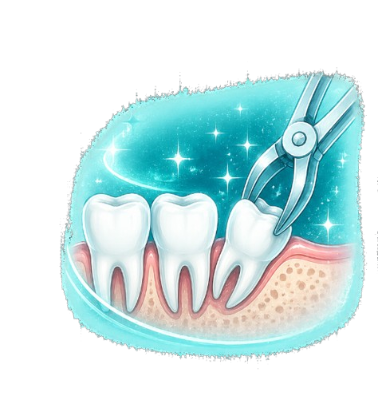
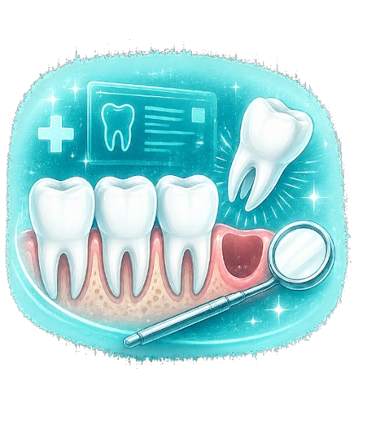

Safe, gentle, and precise wisdom tooth removal designed to relieve pain, prevent complications, and support long-term oral health.

Wisdom teeth often become impacted, crowded, or painful due to lack of space in the jaw. Removing them early can help prevent infection, swelling, damage to nearby teeth, and long-term discomfort.
At Serenity Dental, we combine advanced imaging, minimally invasive techniques, and gentle surgical care to ensure a smooth extraction experience with faster recovery and maximum patient comfort.
Every extraction begins with a detailed consultation and digital X-rays to evaluate tooth position, nerve proximity, and jaw structure for safe and precise treatment planning.
Our wisdom tooth treatments include:

Performed with advanced techniques for maximum comfort.
Precise imaging ensures safer treatment planning.
Minimally invasive care helps reduce healing time.
Prevents crowding, infection, and future complications.
Common questions about wisdom tooth extraction and recovery.
The procedure is performed under local anesthesia, making it comfortable and virtually painless during treatment.
Most patients recover within a few days, while complete healing usually takes one to two weeks.
Removal is recommended when wisdom teeth are impacted, painful, infected, or causing crowding or damage to nearby teeth.
Yes. In many cases, all four wisdom teeth can safely be removed during a single visit.